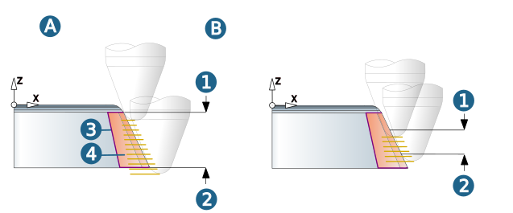
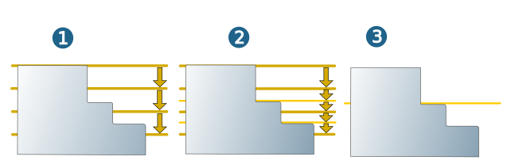
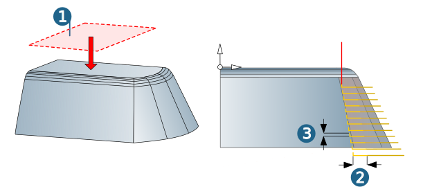

Parameters
Machining area
The Top (1) and Bottom (2) of the machining are defined by default using the Boundary curve (3) or the Milling surfaces (4), see the Boundary dialog page (A).
If necessary, enable Manual top and Manual bottom and define the required values or select a point in the CAD model for each in order to specify the vertical machining area manually (B).
|  |
Allowance / Vertical infeed mode
Allowance (1): Remaining material on the workpiece. Calculated relatively in direction of the surface normals. Added to the Clearance parameter during machining (see section Check tool).
The stock allowance only applies for surfaces. For areas where there are no surfaces present there will be no stock allowance calculated.
Additional allowance XY (2): Additional horizontal stock allowance enables machining with different stock allowances for the bottom and side walls of the machining area.
The vertical infeed mode defines the mode of computation for the vertical distances between the milling paths.
Constant stepdown (3): The stepdown takes place with a fixed vertical increment.
Scallop height (4): A pre-defined scallop height is not exceeded during machining. The Z distance between the individual milling paths depends on the surface curvature and steepness. It is calculated over the cutting plane and the smallest value found is used for machining.
Note
If a tool with a freely defined geometry is used and the Use free tip geometry for calculation function is enabled, the infeed always takes place as a Constant stepdown.
Scallop height value: Enter the required scallop height. The Scallop height infeed mode will significantly increase the calculation time for the milling paths.
Minimum vertical stepdown: Limits the distance between the milling paths. Avoids machining that is too fine when the required scallop height cannot be retained because of very steep side surfaces.
Apply this for machining areas with steep side surfaces (surface slope > 40°) and very smooth surfaces.
Maximal vertical stepdown: Upper limit for the vertical distance of the toolpaths for preventing tool breakages.
 |
Plane level detection
Off (1): The defined vertical stepdown is kept for each roughing level irrespective of the workpiece surface.
Automatic (2): If the defined vertical stepdown value is greater than the distance between two surfaces of the workpiece, the system automatically inserts an intermediate step with a smaller vertical stepdown value for the planar surfaces of the workpiece over the entire circumference.
Only planar faces (3): Only the plane-parallel surfaces inside the boundary are machined.
|  |
Retract mode / Safety
The retract mode defines the Z level where the system executes horizontal infeed movements.
Clearance plane and clearance distance apply in the direction of the Z axis of the current frame.
Clearance plane (1): Plane for rapid tool movements. Specification in absolute dimensions Define the clearance plane by right-clicking on the icon. Select a point and confirm the selection.
Warning
Traversing movements on the clearance plane are not checked with regard to collisions. Therefore, this plane must be placed at a sufficient distance above the surface of the workpiece.
Side clearance (2) / Axial clearance (3): Minimum distance in a lateral (1) or axial (2) direction from the surface of the machined part. Clearance that can be travelled without a collision.
|  |